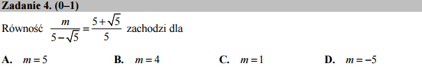

O tym jak solve wykona pracę za nas i kiedy nas zawiedzie¶

{kind=link}
Czy równość:
zachodzi dla: \(m=5\), \(m=4\), \(m=1\), czy może \(m = -5\)?
System algebry komputerowej z chęcią rozwiąże również i taką równość:
Jak to działa: solve?
Funkcja solve jest bardzo potężnym narzędziem! Umożliwia ono nam algebraiczne rozwiązywanie równiań i układów równań. W powyższym przypadku zadziałało ono „magicznie” i otrzymaliśmy wynik. Nie zawsze jednak wynik jest możliwy do otrzymania, a czasem jest bardzo skomplikowany. Spróbuj sam, rozwiąż na przykład: \(a x^2+b x + c ==0\).
var('a,b,c,x')
show( solve(a*x^2+b*x+c==0,x) )
Zastąp wyraz z najwyższą potęgą \(x\) przez \(a x^3\), \(a x^4\),… Czy komputer znajdzie odpowiedź dla dowolnie dużej potęgi? Ograniczenia narzucone są przez Teorię Galois .
Zadanie daje nam jednak zbiór czterech wartości m do sprawdzenia, więc możemy też pokusić się o sprawdzenie każdej z opowiedzi:
Jak to działa: bool?
Funkcja bool próbuje, używając systemu algebry komputerowej sprawdzić algebraiczną poprawność równania. Pętla for zapewnia sprawdzenie dla każdej odpowiedzi z testu.
Możemy się posłużyć też przybliżeniem arytmetycznym wyrażeń po lewej i prawej stronie równości. Nie jest to dokładny wynik w sensie matematycznym, ale poniższy kod nie pozostawia złudzeń która odpowiedź jest poprawna: